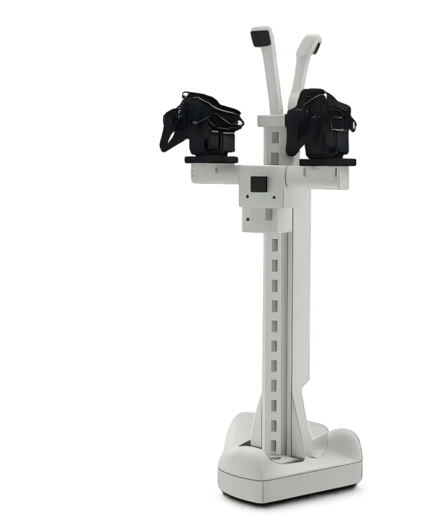
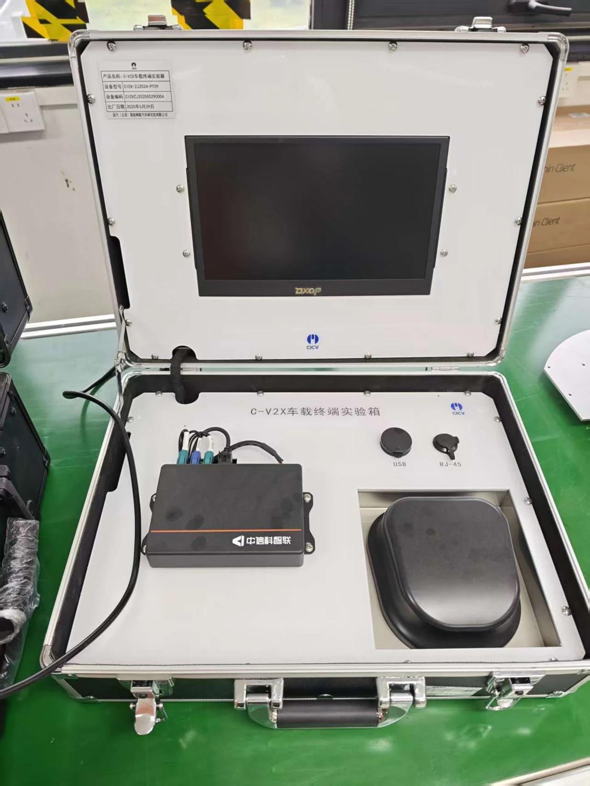
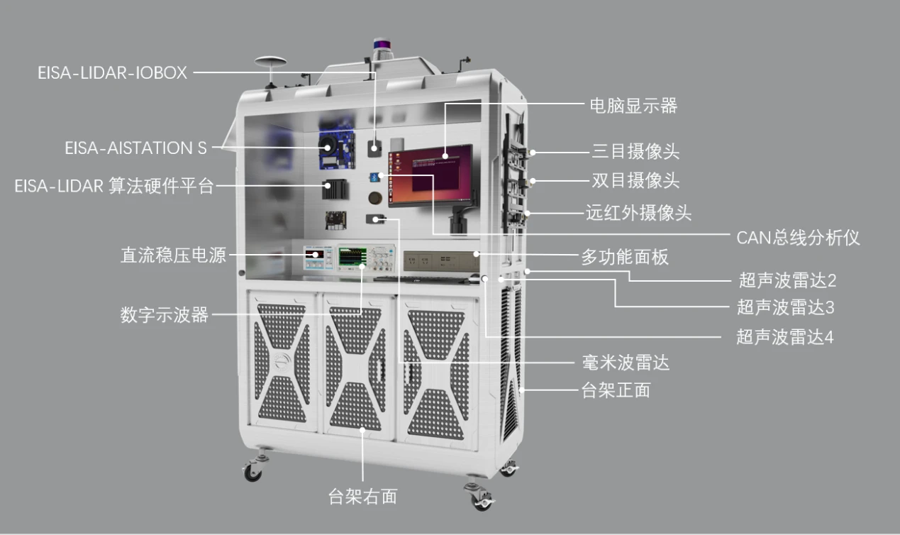
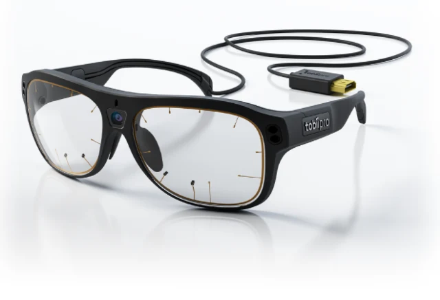
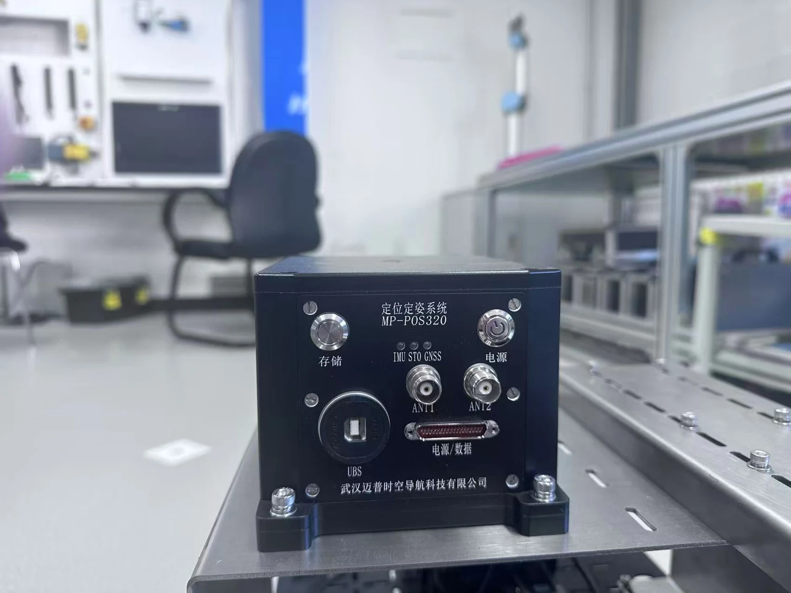
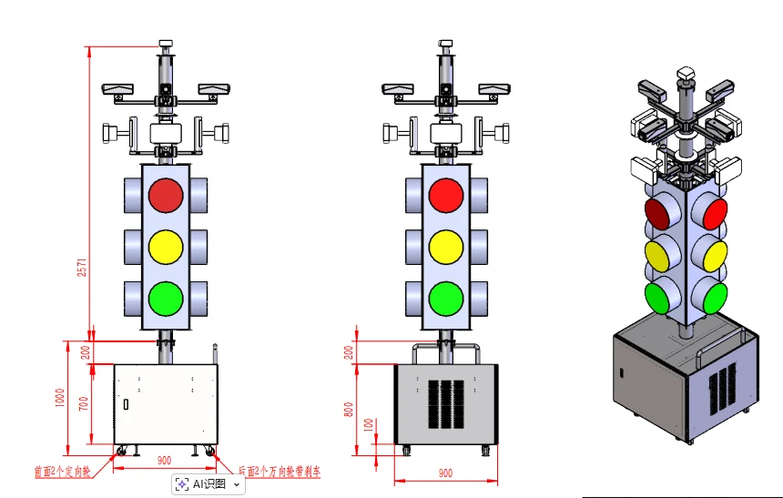
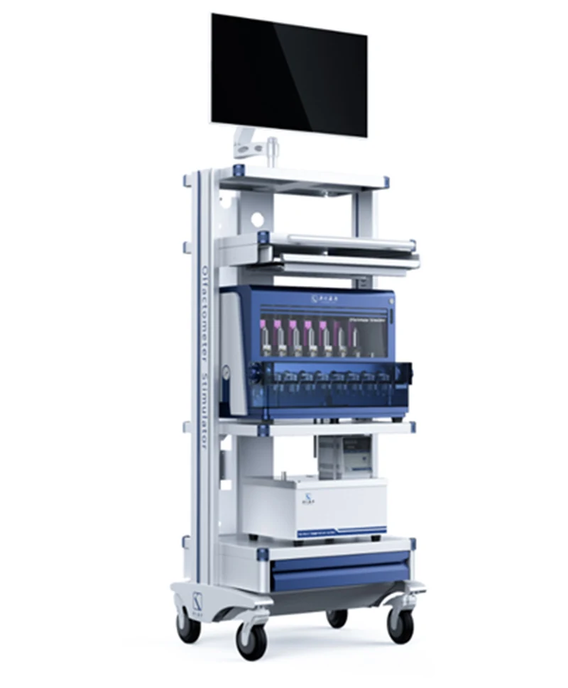

具身智能
具身智能Roboto Origin 人形机器人
RoboParty · ROBOTO_ORIGIN
用于人形机器人运动控制、强化学习训练与仿真到实机部署研究。
参数与资料 →
具身智能用于人形机器人运动控制、强化学习训练与仿真到实机部署研究。

具身智能已提供设备手册入口，作为机器人操作与具身智能实验平台展示。具体配置待补充。
 具身智能
具身智能主从遥操作采集双相机数据，在同一平台上开展 ACT、SmolVLA 与 π0 的学习和复现实验。
 具身智能
具身智能七自由度扭矩控制机械臂，面向柔顺操作、力觉交互、视觉伺服与人机协作研究。
 智能驾驶
智能驾驶集成毫米波雷达、激光雷达、摄像头与国产 SoC 计算平台，支持感知数据接入和系统开发。

智能驾驶面向车路协同与智能网联通信实验，开展车端通信接入、信息交互与应用验证。

智能驾驶可移动的传感与感知实验台架，配套视觉、激光雷达、毫米波雷达、超声波和组合导航课程资料。
 智能驾驶
智能驾驶配套鸿蒙座舱课程，覆盖 OTA、抬头显示、视觉交互、座椅控制等功能的开发与测试。
 人因工程
人因工程两台驾驶模拟器，配合 51Sim 软件开展驾驶行为、人机共驾及仿真场景实验。

人因工程采集自然任务中的注视与场景信息，用于视觉注意力、交互体验和驾驶行为研究。
 人因工程
人因工程用于脑电与生理信号采集，支持疲劳、注意分散和驾驶员状态监测研究。

无人系统光纤陀螺组合导航平台，为无人系统定位、姿态估计及多传感器融合提供实验条件。

智能驾驶面向车路协同场景，组织路侧感知、通信与交通信息交互实验。

人因工程提供可控制的嗅觉刺激条件，面向嗅觉编码、多模态融合及物流环境感知研究。
 无人系统
无人系统围绕多机协同吊运、空地配送和人机协同搬运开展规划、控制与装备研究。
 无人系统
无人系统PPT中展示的物流机器人研究样机，可用于说明无人搬运与物流作业研究场景；具体型号及归属待确认。